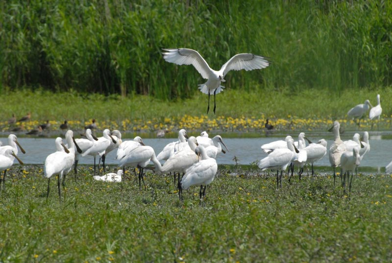
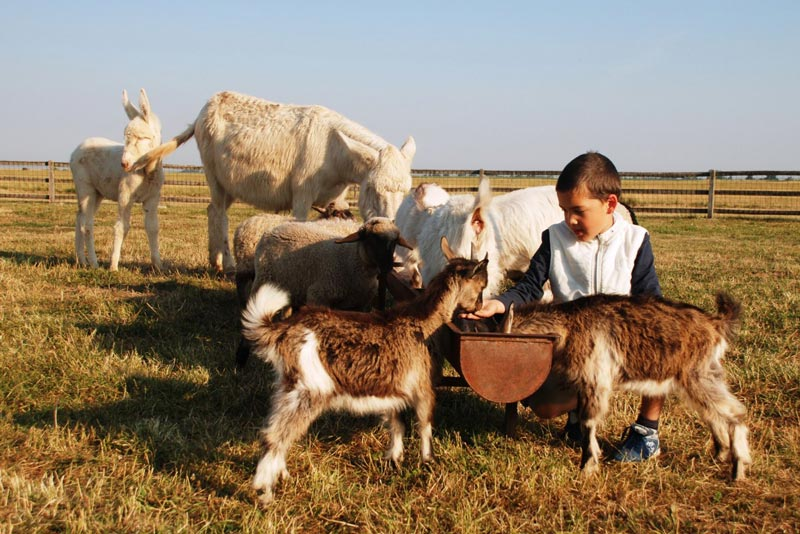
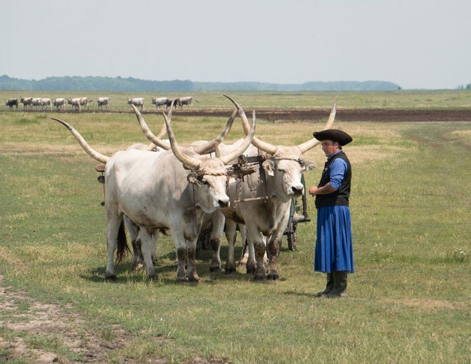
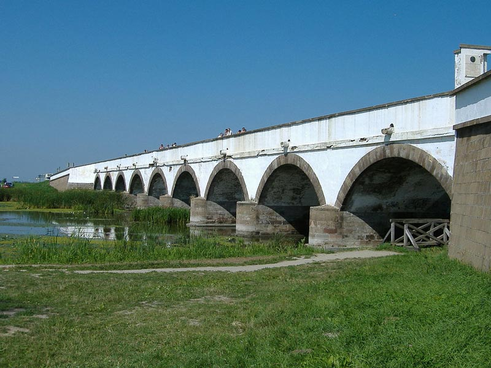
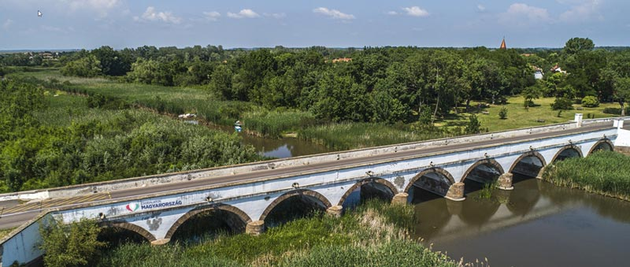
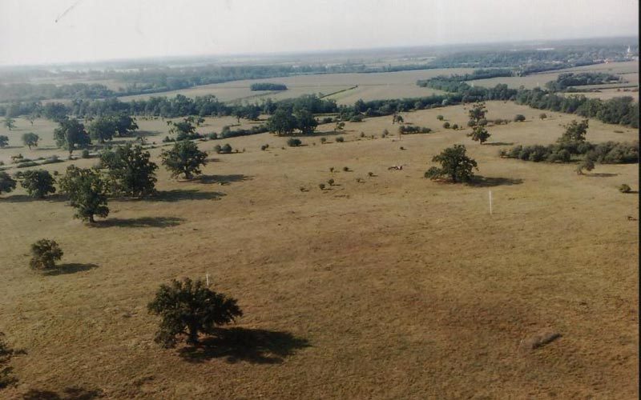
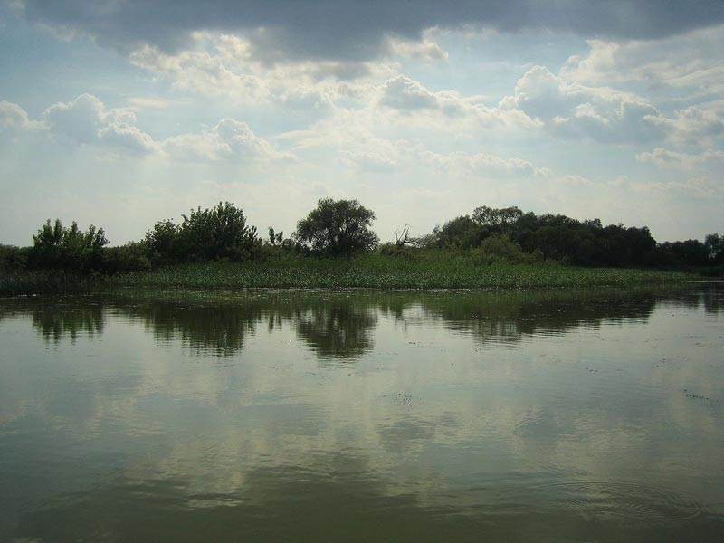

【美景】
霍尔托巴吉国家公园整个地区被列入《世界文化与自然遗产名录》，是匈牙利最大的保护区，并且欧洲是最大的半天然草原。 霍尔托巴吉九孔桥是中欧最长的公路石桥。 霍尔托巴吉国家公园特殊的牧羊文化是世界遗产的一部分。 霍尔托巴吉是匈牙利最大的村庄。
【美食】
Goulash牛肉炖汤
Libamáj 鹅肝
Lángos特色油饼
Toltott Kaposzta 圆白菜肉丸
Halászlé 鱼汤
Ujhazi Tyukhuslevesi 家常老鸡汤
Kurtoskalacs 烟囱卷面包
Egri Bikavér埃格尔公牛血葡萄酒
霍尔托巴吉 霍尔托巴吉是匈牙利豪伊杜•比豪尔州所辖的一个村，在德布勒森的西部，总面积285平方公里，总人口1500，是匈牙利最大的村庄。 1827年至1833年之间，建造了“霍尔托巴吉九孔桥”，这是中欧最长的公路石桥。2016年7月1日，试图引爆第二次世界大战后不久俄罗斯制造的250公斤炸弹时，匈牙利国防军的4名拆除专家被炸死，另一名重伤，据报道，爆炸发生时，雷管已经被拆除。该事件发生在霍尔托巴吉国家公园的射击场。射击场占地4000公顷（约9800英亩），并已被匈牙利武装部队使用数十年。
景点：霍尔托巴吉国家公园 特殊的牧羊文化是世界遗产的一部分。霍尔托巴吉国家公园是于1973年1月1日第一个在匈牙利成立的国家公园，它占地82,000公顷。1999年11月30日于马拉喀什举行的联合国教科文组织世界遗产委员会会议上，霍尔托巴吉国家公园的整个地区被列入《世界文化与自然遗产名录》。是匈牙利最大的保护区，并且欧洲是最大的半天然草原。



景点：九孔桥 九孔桥是霍尔托巴吉国家公园标志之一，这座拱桥是1921年之前匈牙利历史上最长的公路石桥，这座桥是在1827年至1833年之间以古典风格建造的。 九拱桥的前身是一座建于1697年的木结构，由于交通繁忙，该木结构随时间而恶化。在对木桥进行了数年的昂贵维护之后，德布勒森市于1825年决定拆除它，并在其位置建造一座新的石桥。


景点：萨图马雷贝雷格景观保护区 萨图马雷贝雷格景观保护区于1982年建立，其中心位于费赫尔吉马特，该地区是珍贵野生动植物的家园。 贝雷格的泥炭苔藓沼泽是匈牙利自然保护的最重要的对象，在大平原上建立它们需要的非常特殊的微气候条件。在泥炭苔藓沼泽中，尼耶斯湖是一种隆隆沼泽，在匈牙利具有独特的价值，因为它是整个中欧最南端的栖息地。

景点：蒂萨中部景观保护区 1978年在蒂萨的洪泛区建立的景观保护区，在9,500公顷土地上形成的次生景观。佩里鸟类保护区，奥波莱和韦兹尼自然保护区。该地区的中央景观蒂萨保护区是9455.6公顷，这里833公顷受到重点保护。该景观保护区属于霍尔托巴吉国家公园。

景点：比哈尔平原景观保护区 景观保护区包括四个景观单元，其一部分位于埃勒雷克的跨境地区哈伊杜莎格，南部的比哈里平原，北部的贝雷蒂蒂起伏的景观。比哈里平原部分保护区让我们想起园艺学：马赛克植被，景观保护区的马赛克可以分为四个主要景观单元。